Held-out observed pairs. Supportive/counterexamples are extremes in the frozen direction, one per distinct prompt; random audit uses a seeded hash ordering. Examples are illustrative, not typicality or causal evidence. The CSV is a blank human annotation template.
emerald-green (preferred direction frozen on discovery) supportive film still of the geisha robot from ghost in the shell, cinematic lighting, 3 5 mm, high resolution
preferred: 0.2950 rejected: 0.1697 Preferred − rejected: +0.1253; event imagereward:test:008289-0059. Unverified.
supportive a bright fantasy city built between cliffs, sleek glass buildings, elegant bridges between stalactites, illustration, raining, dark and moody lighting, at night, digital art, oil painting, cold blue tones, fantasy, 8 k, trending on artstation, detailed
preferred: 0.2390 rejected: 0.1601 Preferred − rejected: +0.0789; event imagereward:test:010921-0064. Unverified.
counterexample film still of the geisha robot from ghost in the shell, cinematic lighting, 3 5 mm, high resolution
preferred: 0.1820 rejected: 0.2950
Preferred − rejected: -0.1130; event imagereward:test:008289-0059. Unverified.
counterexample Drama King, photorealistic portrait, 8K, Cinematic lights
preferred: 0.1627 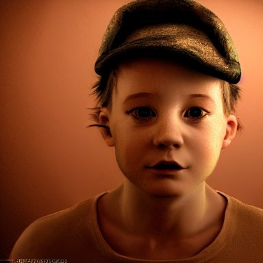
rejected: 0.2532 Preferred − rejected: -0.0905; event imagereward:test:007108-0023. Unverified.
random_audit funny peanut butter
preferred: 0.1779 rejected: 0.1647 Preferred − rejected: +0.0132; event imagereward:test:010856-0009. Unverified.
random_audit the pope in saving private james ryan
preferred: 0.2361 rejected: 0.2585 Preferred − rejected: -0.0225; event imagereward:test:010918-0030. Unverified.
red-flag (preferred direction frozen on discovery) supportive a bright fantasy city built between cliffs, sleek glass buildings, elegant bridges between stalactites, illustration, raining, dark and moody lighting, at night, digital art, oil painting, cold blue tones, fantasy, 8 k, trending on artstation, detailed
preferred: 0.3117 rejected: 0.1451 Preferred − rejected: +0.1665; event imagereward:test:010921-0064. Unverified.
supportive funny peanut butter
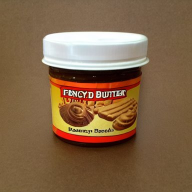
preferred: 0.2535 rejected: 0.1403 Preferred − rejected: +0.1132; event imagereward:test:010856-0009. Unverified.
counterexample a bright fantasy city built between cliffs, sleek glass buildings, elegant bridges between stalactites, illustration, raining, dark and moody lighting, at night, digital art, oil painting, cold blue tones, fantasy, 8 k, trending on artstation, detailed
preferred: 0.1451 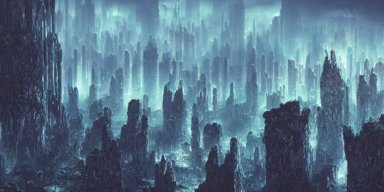
rejected: 0.2764 Preferred − rejected: -0.1313; event imagereward:test:010921-0064. Unverified.
counterexample film still of the geisha robot from ghost in the shell, cinematic lighting, 3 5 mm, high resolution
preferred: 0.2299 rejected: 0.3414 Preferred − rejected: -0.1114; event imagereward:test:008289-0059. Unverified.
random_audit Boris Johnson and Eminen on a stage having an epic rap battle together
preferred: 0.2809 rejected: 0.2402 Preferred − rejected: +0.0407; event imagereward:test:007713-0046. Unverified.
random_audit Horrifying creature, haunted, horror
preferred: 0.1390 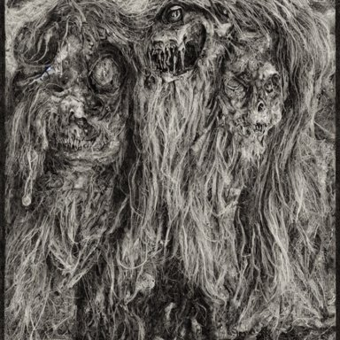
rejected: 0.1450 Preferred − rejected: -0.0060; event imagereward:test:009006-0102. Unverified.
red-velvet (preferred direction frozen on discovery) supportive Drama King, photorealistic portrait, 8K, Cinematic lights
preferred: 0.2838 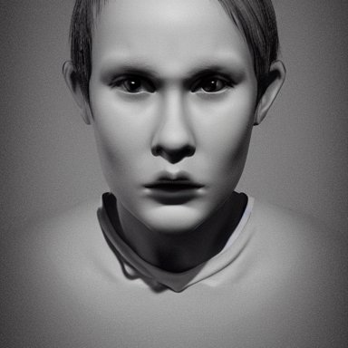
rejected: 0.1671 Preferred − rejected: +0.1167; event imagereward:test:007108-0023. Unverified.
supportive cute little dragon, gnome, elf, mage playing dnd at night in a medieval bar, fantasy, concept art, highly detailed, octane, unreal engine, anime, by laurel d austin, ghibly, disney, pixar, dreamworks
preferred: 0.2593 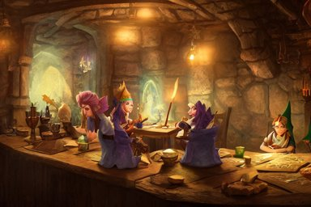
rejected: 0.1665 Preferred − rejected: +0.0928; event imagereward:test:007753-0023. Unverified.
counterexample astronaut drifting afloat in space, in the darkness away from anyone else, alone, digital render, detailed illustration, black background dotted with stars, concept art, realistic, 8 k
preferred: 0.1545 rejected: 0.2682 Preferred − rejected: -0.1137; event imagereward:test:007019-0095. Unverified.
counterexample Drama King, photorealistic portrait, 8K, Cinematic lights
preferred: 0.1794 rejected: 0.2838 Preferred − rejected: -0.1044; event imagereward:test:007108-0023. Unverified.
random_audit a bright fantasy city built between cliffs, sleek glass buildings, elegant bridges between stalactites, illustration, raining, dark and moody lighting, at night, digital art, oil painting, cold blue tones, fantasy, 8 k, trending on artstation, detailed
preferred: 0.1355 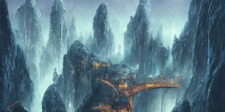
rejected: 0.1469 Preferred − rejected: -0.0114; event imagereward:test:010921-0064. Unverified.
random_audit Drama King, photorealistic portrait, 8K, Cinematic lights
preferred: 0.1794 rejected: 0.2838 Preferred − rejected: -0.1044; event imagereward:test:007108-0023. Unverified.
hot-pink (preferred direction frozen on discovery) supportive cute little dragon, gnome, elf, mage playing dnd at night in a medieval bar, fantasy, concept art, highly detailed, octane, unreal engine, anime, by laurel d austin, ghibly, disney, pixar, dreamworks
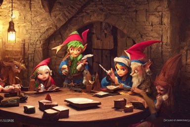
preferred: 0.2736 rejected: 0.1517 Preferred − rejected: +0.1220; event imagereward:test:007753-0023. Unverified.
supportive the pope in saving private james ryan
preferred: 0.2931 rejected: 0.1726 Preferred − rejected: +0.1205; event imagereward:test:010918-0030. Unverified.
counterexample astronaut drifting afloat in space, in the darkness away from anyone else, alone, digital render, detailed illustration, black background dotted with stars, concept art, realistic, 8 k
preferred: 0.1444 rejected: 0.2754 Preferred − rejected: -0.1310; event imagereward:test:007019-0095. Unverified.
counterexample cute little dragon, gnome, elf, mage playing dnd at night in a medieval bar, fantasy, concept art, highly detailed, octane, unreal engine, anime, by laurel d austin, ghibly, disney, pixar, dreamworks
preferred: 0.1601 rejected: 0.2736 Preferred − rejected: -0.1135; event imagereward:test:007753-0023. Unverified.
random_audit Drama King, photorealistic portrait, 8K, Cinematic lights
preferred: 0.2086 rejected: 0.2728 Preferred − rejected: -0.0643; event imagereward:test:007108-0023. Unverified.
random_audit mother theresa eating a terrapin
preferred: 0.1611 rejected: 0.1927
Preferred − rejected: -0.0316; event imagereward:test:010817-0088. Unverified.
red-and-yellow (preferred direction frozen on discovery) supportive funny peanut butter
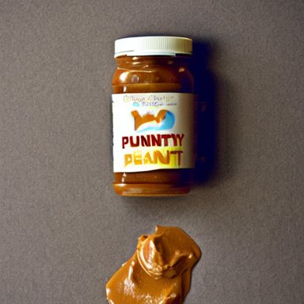
preferred: 0.3352 rejected: 0.1678 Preferred − rejected: +0.1675; event imagereward:test:010856-0009. Unverified.
supportive Drama King, photorealistic portrait, 8K, Cinematic lights
preferred: 0.2745 rejected: 0.1761
Preferred − rejected: +0.0985; event imagereward:test:007108-0023. Unverified.
counterexample funny peanut butter
preferred: 0.1998 rejected: 0.3352 Preferred − rejected: -0.1354; event imagereward:test:010856-0009. Unverified.
counterexample astronaut drifting afloat in space, in the darkness away from anyone else, alone, digital render, detailed illustration, black background dotted with stars, concept art, realistic, 8 k
preferred: 0.1779 rejected: 0.3014 Preferred − rejected: -0.1234; event imagereward:test:007019-0095. Unverified.
random_audit funny peanut butter
preferred: 0.2913 rejected: 0.2770 Preferred − rejected: +0.0143; event imagereward:test:010856-0009. Unverified.
random_audit a bright fantasy city built between cliffs, sleek glass buildings, elegant bridges between stalactites, illustration, raining, dark and moody lighting, at night, digital art, oil painting, cold blue tones, fantasy, 8 k, trending on artstation, detailed
preferred: 0.2614 rejected: 0.1910 Preferred − rejected: +0.0704; event imagereward:test:010921-0064. Unverified.
hairstyle (preferred direction frozen on discovery) supportive Horrifying creature, haunted, horror
preferred: 0.3393 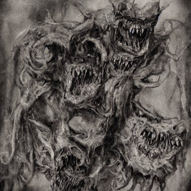
rejected: 0.2143 Preferred − rejected: +0.1250; event imagereward:test:009006-0102. Unverified.
supportive film still of the geisha robot from ghost in the shell, cinematic lighting, 3 5 mm, high resolution
preferred: 0.3393 rejected: 0.2490
Preferred − rejected: +0.0904; event imagereward:test:008289-0059. Unverified.
counterexample Horrifying creature, haunted, horror
preferred: 0.2199 rejected: 0.3393 Preferred − rejected: -0.1194; event imagereward:test:009006-0102. Unverified.
counterexample cute little dragon, gnome, elf, mage playing dnd at night in a medieval bar, fantasy, concept art, highly detailed, octane, unreal engine, anime, by laurel d austin, ghibly, disney, pixar, dreamworks
preferred: 0.2052 rejected: 0.2703 Preferred − rejected: -0.0650; event imagereward:test:007753-0023. Unverified.
random_audit funny peanut butter
preferred: 0.2420 rejected: 0.2084 Preferred − rejected: +0.0336; event imagereward:test:010856-0009. Unverified.
random_audit a bright fantasy city built between cliffs, sleek glass buildings, elegant bridges between stalactites, illustration, raining, dark and moody lighting, at night, digital art, oil painting, cold blue tones, fantasy, 8 k, trending on artstation, detailed
preferred: 0.1464 rejected: 0.1663
Preferred − rejected: -0.0199; event imagereward:test:010921-0064. Unverified.
redcoat (preferred direction frozen on discovery) supportive cute little dragon, gnome, elf, mage playing dnd at night in a medieval bar, fantasy, concept art, highly detailed, octane, unreal engine, anime, by laurel d austin, ghibly, disney, pixar, dreamworks
preferred: 0.3080 rejected: 0.2073 Preferred − rejected: +0.1007; event imagereward:test:007753-0023. Unverified.
supportive funny peanut butter
preferred: 0.2437 rejected: 0.1529 Preferred − rejected: +0.0908; event imagereward:test:010856-0009. Unverified.
counterexample cute little dragon, gnome, elf, mage playing dnd at night in a medieval bar, fantasy, concept art, highly detailed, octane, unreal engine, anime, by laurel d austin, ghibly, disney, pixar, dreamworks
preferred: 0.2073 rejected: 0.3278 Preferred − rejected: -0.1205; event imagereward:test:007753-0023. Unverified.
counterexample mother theresa eating a terrapin
preferred: 0.1735 rejected: 0.2505 Preferred − rejected: -0.0769; event imagereward:test:010817-0088. Unverified.
random_audit bioluminescent crystal ball abstract sculpture, neon, fluorescent, magenta hyper detailed, red & purple beauteous biomechanical organic lightpainting, 8 k scenery, perfect lighting balance,
preferred: 0.1849 rejected: 0.1995 Preferred − rejected: -0.0145; event imagereward:test:008275-0162. Unverified.
random_audit cinematic movie scene, beautiful Product shot film still of a Syd Mead futuristic modern sleek automobile speeding down a wet street at night in cyperpunk city, motion, hard surface modeling, volumetric soft lighting, style of Stanley Kubrick cinematography, 8k H 768
preferred: 0.2253 rejected: 0.2062 Preferred − rejected: +0.0191; event imagereward:test:011041-0080. Unverified.
lip-syncing (preferred direction frozen on discovery) supportive the pope in saving private james ryan
preferred: 0.3108 rejected: 0.2337 Preferred − rejected: +0.0771; event imagereward:test:010918-0030. Unverified.
supportive mother theresa eating a terrapin
preferred: 0.3181 rejected: 0.2487
Preferred − rejected: +0.0694; event imagereward:test:010817-0088. Unverified.
counterexample the pope in saving private james ryan
preferred: 0.2478 rejected: 0.2845 Preferred − rejected: -0.0367; event imagereward:test:010918-0030. Unverified.
counterexample mother theresa eating a terrapin
preferred: 0.2487 rejected: 0.2851 Preferred − rejected: -0.0364; event imagereward:test:010817-0088. Unverified.
random_audit astronaut drifting afloat in space, in the darkness away from anyone else, alone, digital render, detailed illustration, black background dotted with stars, concept art, realistic, 8 k
preferred: 0.1975 rejected: 0.1971 Preferred − rejected: +0.0005; event imagereward:test:007019-0095. Unverified.
random_audit Horrifying creature, haunted, horror
preferred: 0.2734 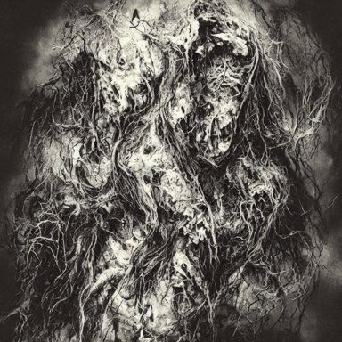
rejected: 0.2485 Preferred − rejected: +0.0249; event imagereward:test:009006-0102. Unverified.
red-tile (preferred direction frozen on discovery) supportive funny peanut butter
preferred: 0.2942 rejected: 0.1753 Preferred − rejected: +0.1189; event imagereward:test:010856-0009. Unverified.
supportive astronaut drifting afloat in space, in the darkness away from anyone else, alone, digital render, detailed illustration, black background dotted with stars, concept art, realistic, 8 k
preferred: 0.2583 rejected: 0.1519
Preferred − rejected: +0.1064; event imagereward:test:007019-0095. Unverified.
counterexample bioluminescent crystal ball abstract sculpture, neon, fluorescent, magenta hyper detailed, red & purple beauteous biomechanical organic lightpainting, 8 k scenery, perfect lighting balance,
preferred: 0.1395 rejected: 0.2913 Preferred − rejected: -0.1517; event imagereward:test:008275-0162. Unverified.
counterexample astronaut drifting afloat in space, in the darkness away from anyone else, alone, digital render, detailed illustration, black background dotted with stars, concept art, realistic, 8 k
preferred: 0.1519 rejected: 0.2808 Preferred − rejected: -0.1289; event imagereward:test:007019-0095. Unverified.
random_audit astronaut drifting afloat in space, in the darkness away from anyone else, alone, digital render, detailed illustration, black background dotted with stars, concept art, realistic, 8 k
preferred: 0.2583 rejected: 0.1519
Preferred − rejected: +0.1064; event imagereward:test:007019-0095. Unverified.
random_audit a group of artists creating a masterpiece, glorious, in the style of artgerm and charlie bowater and atey ghailan and mike mignola, epic lighting, vibrant colors and hard shadows and strong rim light, very coherent, comic cover art, plain background, trending on artstation
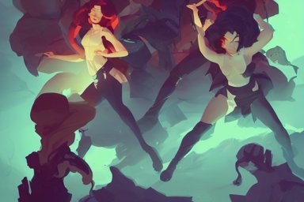
preferred: 0.2339 rejected: 0.2661 Preferred − rejected: -0.0322; event imagereward:test:008615-0007. Unverified.
neon-green (preferred direction frozen on discovery) supportive funny peanut butter
preferred: 0.3329 rejected: 0.1716 Preferred − rejected: +0.1613; event imagereward:test:010856-0009. Unverified.
supportive a bright fantasy city built between cliffs, sleek glass buildings, elegant bridges between stalactites, illustration, raining, dark and moody lighting, at night, digital art, oil painting, cold blue tones, fantasy, 8 k, trending on artstation, detailed
preferred: 0.2836 rejected: 0.1512 Preferred − rejected: +0.1324; event imagereward:test:010921-0064. Unverified.
counterexample mother theresa eating a terrapin
preferred: 0.1543 rejected: 0.2964
Preferred − rejected: -0.1420; event imagereward:test:010817-0088. Unverified.
counterexample funny peanut butter
preferred: 0.2127 rejected: 0.3329 Preferred − rejected: -0.1202; event imagereward:test:010856-0009. Unverified.
random_audit the pope in saving private james ryan
preferred: 0.2170 rejected: 0.2807 Preferred − rejected: -0.0637; event imagereward:test:010918-0030. Unverified.
random_audit cute little dragon, gnome, elf, mage playing dnd at night in a medieval bar, fantasy, concept art, highly detailed, octane, unreal engine, anime, by laurel d austin, ghibly, disney, pixar, dreamworks
preferred: 0.2500 rejected: 0.2766 Preferred − rejected: -0.0266; event imagereward:test:007753-0023. Unverified.
drainboard (rejected direction frozen on discovery) supportive Boris Johnson and Eminen on a stage having an epic rap battle together
preferred: 0.1696 rejected: 0.2585 Preferred − rejected: -0.0889; event imagereward:test:007713-0046. Unverified.
supportive the pope in saving private james ryan
preferred: 0.1505 rejected: 0.2091 Preferred − rejected: -0.0586; event imagereward:test:010918-0030. Unverified.
counterexample a group of artists creating a masterpiece, glorious, in the style of artgerm and charlie bowater and atey ghailan and mike mignola, epic lighting, vibrant colors and hard shadows and strong rim light, very coherent, comic cover art, plain background, trending on artstation
preferred: 0.2284 rejected: 0.1658 Preferred − rejected: +0.0626; event imagereward:test:008615-0007. Unverified.
counterexample astronaut drifting afloat in space, in the darkness away from anyone else, alone, digital render, detailed illustration, black background dotted with stars, concept art, realistic, 8 k
preferred: 0.2474 rejected: 0.1903 Preferred − rejected: +0.0570; event imagereward:test:007019-0095. Unverified.
random_audit a bright fantasy city built between cliffs, sleek glass buildings, elegant bridges between stalactites, illustration, raining, dark and moody lighting, at night, digital art, oil painting, cold blue tones, fantasy, 8 k, trending on artstation, detailed
preferred: 0.1983 rejected: 0.1892 Preferred − rejected: +0.0091; event imagereward:test:010921-0064. Unverified.
random_audit realistic photography of a man 3 5 years old with a bit of bear, short hair, few wrinkles around eyes, sexy, cinematographic, cinematic light, close up view, intense, colorize, 8 0 mm lens
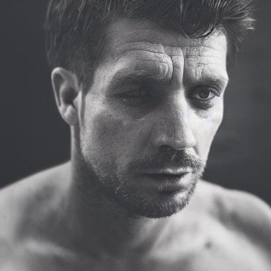
preferred: 0.1933 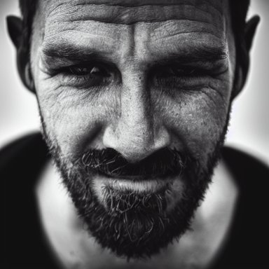
rejected: 0.1603 Preferred − rejected: +0.0330; event imagereward:test:001260-0073. Unverified.
chickweed (rejected direction frozen on discovery) supportive realistic photography of a man 3 5 years old with a bit of bear, short hair, few wrinkles around eyes, sexy, cinematographic, cinematic light, close up view, intense, colorize, 8 0 mm lens
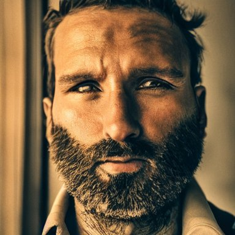
preferred: 0.2000 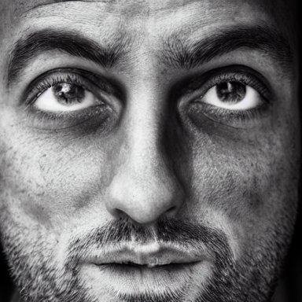
rejected: 0.2596 Preferred − rejected: -0.0596; event imagereward:test:001260-0073. Unverified.
supportive astronaut drifting afloat in space, in the darkness away from anyone else, alone, digital render, detailed illustration, black background dotted with stars, concept art, realistic, 8 k
preferred: 0.2029 rejected: 0.2609 Preferred − rejected: -0.0580; event imagereward:test:007019-0095. Unverified.
counterexample the pope in saving private james ryan
preferred: 0.2513 rejected: 0.1880 Preferred − rejected: +0.0633; event imagereward:test:010918-0030. Unverified.
counterexample a bright fantasy city built between cliffs, sleek glass buildings, elegant bridges between stalactites, illustration, raining, dark and moody lighting, at night, digital art, oil painting, cold blue tones, fantasy, 8 k, trending on artstation, detailed
preferred: 0.2320 rejected: 0.1772 Preferred − rejected: +0.0548; event imagereward:test:010921-0064. Unverified.
random_audit astronaut drifting afloat in space, in the darkness away from anyone else, alone, digital render, detailed illustration, black background dotted with stars, concept art, realistic, 8 k
preferred: 0.2135 rejected: 0.2029
Preferred − rejected: +0.0106; event imagereward:test:007019-0095. Unverified.
random_audit Horrifying creature, haunted, horror
preferred: 0.2189 rejected: 0.2548 Preferred − rejected: -0.0358; event imagereward:test:009006-0102. Unverified.
clover (rejected direction frozen on discovery) supportive astronaut drifting afloat in space, in the darkness away from anyone else, alone, digital render, detailed illustration, black background dotted with stars, concept art, realistic, 8 k
preferred: 0.1644 rejected: 0.2454 Preferred − rejected: -0.0810; event imagereward:test:007019-0095. Unverified.
supportive the pope in saving private james ryan
preferred: 0.1847 rejected: 0.2639
Preferred − rejected: -0.0792; event imagereward:test:010918-0030. Unverified.
counterexample the pope in saving private james ryan
preferred: 0.2639 rejected: 0.1932 Preferred − rejected: +0.0707; event imagereward:test:010918-0030. Unverified.
counterexample astronaut drifting afloat in space, in the darkness away from anyone else, alone, digital render, detailed illustration, black background dotted with stars, concept art, realistic, 8 k
preferred: 0.2454 rejected: 0.1754 Preferred − rejected: +0.0700; event imagereward:test:007019-0095. Unverified.
random_audit Horrifying creature, haunted, horror
preferred: 0.1966 rejected: 0.1794 Preferred − rejected: +0.0172; event imagereward:test:009006-0102. Unverified.
random_audit the pope in saving private james ryan
preferred: 0.1847 rejected: 0.1829
Preferred − rejected: +0.0018; event imagereward:test:010918-0030. Unverified.
spurge (rejected direction frozen on discovery) supportive a bright fantasy city built between cliffs, sleek glass buildings, elegant bridges between stalactites, illustration, raining, dark and moody lighting, at night, digital art, oil painting, cold blue tones, fantasy, 8 k, trending on artstation, detailed
preferred: 0.1377 rejected: 0.2347
Preferred − rejected: -0.0970; event imagereward:test:010921-0064. Unverified.
supportive bioluminescent crystal ball abstract sculpture, neon, fluorescent, magenta hyper detailed, red & purple beauteous biomechanical organic lightpainting, 8 k scenery, perfect lighting balance,
preferred: 0.1546 rejected: 0.2210 Preferred − rejected: -0.0665; event imagereward:test:008275-0162. Unverified.
counterexample a bright fantasy city built between cliffs, sleek glass buildings, elegant bridges between stalactites, illustration, raining, dark and moody lighting, at night, digital art, oil painting, cold blue tones, fantasy, 8 k, trending on artstation, detailed
preferred: 0.1954 rejected: 0.1377 Preferred − rejected: +0.0577; event imagereward:test:010921-0064. Unverified.
counterexample cute little dragon, gnome, elf, mage playing dnd at night in a medieval bar, fantasy, concept art, highly detailed, octane, unreal engine, anime, by laurel d austin, ghibly, disney, pixar, dreamworks
preferred: 0.2326 rejected: 0.1758 Preferred − rejected: +0.0567; event imagereward:test:007753-0023. Unverified.
random_audit a bright fantasy city built between cliffs, sleek glass buildings, elegant bridges between stalactites, illustration, raining, dark and moody lighting, at night, digital art, oil painting, cold blue tones, fantasy, 8 k, trending on artstation, detailed
preferred: 0.1954 rejected: 0.1394 Preferred − rejected: +0.0560; event imagereward:test:010921-0064. Unverified.
random_audit mother theresa eating a terrapin
preferred: 0.2208 rejected: 0.1897
Preferred − rejected: +0.0311; event imagereward:test:010817-0088. Unverified.
bowl-shaped (rejected direction frozen on discovery) supportive funny peanut butter
preferred: 0.2380 rejected: 0.3140 Preferred − rejected: -0.0760; event imagereward:test:010856-0009. Unverified.
supportive muscular man wearing a leather harness and hat
preferred: 0.1802 rejected: 0.2473 Preferred − rejected: -0.0671; event imagereward:test:007189-0066. Unverified.
counterexample funny peanut butter
preferred: 0.3127 rejected: 0.2415 Preferred − rejected: +0.0712; event imagereward:test:010856-0009. Unverified.
counterexample cute little dragon, gnome, elf, mage playing dnd at night in a medieval bar, fantasy, concept art, highly detailed, octane, unreal engine, anime, by laurel d austin, ghibly, disney, pixar, dreamworks
preferred: 0.2846 rejected: 0.2154 Preferred − rejected: +0.0692; event imagereward:test:007753-0023. Unverified.
random_audit Boris Johnson and Eminen on a stage having an epic rap battle together
preferred: 0.1820 rejected: 0.1891 Preferred − rejected: -0.0071; event imagereward:test:007713-0046. Unverified.
random_audit Drama King, photorealistic portrait, 8K, Cinematic lights
preferred: 0.1808 rejected: 0.2048
Preferred − rejected: -0.0240; event imagereward:test:007108-0023. Unverified.
hail (rejected direction frozen on discovery) supportive Drama King, photorealistic portrait, 8K, Cinematic lights
preferred: 0.2002 rejected: 0.2863
Preferred − rejected: -0.0860; event imagereward:test:007108-0023. Unverified.
supportive funny peanut butter
preferred: 0.1921 rejected: 0.2686 Preferred − rejected: -0.0766; event imagereward:test:010856-0009. Unverified.
counterexample Drama King, photorealistic portrait, 8K, Cinematic lights
preferred: 0.2863 rejected: 0.1801
Preferred − rejected: +0.1062; event imagereward:test:007108-0023. Unverified.
counterexample astronaut drifting afloat in space, in the darkness away from anyone else, alone, digital render, detailed illustration, black background dotted with stars, concept art, realistic, 8 k
preferred: 0.2977 rejected: 0.2362 Preferred − rejected: +0.0615; event imagereward:test:007019-0095. Unverified.
random_audit a bright fantasy city built between cliffs, sleek glass buildings, elegant bridges between stalactites, illustration, raining, dark and moody lighting, at night, digital art, oil painting, cold blue tones, fantasy, 8 k, trending on artstation, detailed
preferred: 0.2609 rejected: 0.2656 Preferred − rejected: -0.0047; event imagereward:test:010921-0064. Unverified.
random_audit Horrifying creature, haunted, horror
preferred: 0.2447 rejected: 0.2494 Preferred − rejected: -0.0047; event imagereward:test:009006-0102. Unverified.
canister (rejected direction frozen on discovery) supportive a group of artists creating a masterpiece, glorious, in the style of artgerm and charlie bowater and atey ghailan and mike mignola, epic lighting, vibrant colors and hard shadows and strong rim light, very coherent, comic cover art, plain background, trending on artstation
preferred: 0.2240 rejected: 0.3268 Preferred − rejected: -0.1028; event imagereward:test:008615-0007. Unverified.
supportive film still of the geisha robot from ghost in the shell, cinematic lighting, 3 5 mm, high resolution
preferred: 0.2173 rejected: 0.3024
Preferred − rejected: -0.0851; event imagereward:test:008289-0059. Unverified.
counterexample the pope in saving private james ryan
preferred: 0.3021 rejected: 0.2005 Preferred − rejected: +0.1016; event imagereward:test:010918-0030. Unverified.
counterexample funny peanut butter
preferred: 0.3366 rejected: 0.2590 Preferred − rejected: +0.0776; event imagereward:test:010856-0009. Unverified.
random_audit realistic photography of a man 3 5 years old with a bit of bear, short hair, few wrinkles around eyes, sexy, cinematographic, cinematic light, close up view, intense, colorize, 8 0 mm lens
preferred: 0.2298 rejected: 0.2290
Preferred − rejected: +0.0007; event imagereward:test:001260-0073. Unverified.
random_audit Drama King, photorealistic portrait, 8K, Cinematic lights
preferred: 0.2269 rejected: 0.2260
Preferred − rejected: +0.0009; event imagereward:test:007108-0023. Unverified.
weed (rejected direction frozen on discovery) supportive astronaut drifting afloat in space, in the darkness away from anyone else, alone, digital render, detailed illustration, black background dotted with stars, concept art, realistic, 8 k
preferred: 0.1886 rejected: 0.2976 Preferred − rejected: -0.1090; event imagereward:test:007019-0095. Unverified.
supportive the pope in saving private james ryan
preferred: 0.2076 rejected: 0.2825
Preferred − rejected: -0.0749; event imagereward:test:010918-0030. Unverified.
counterexample astronaut drifting afloat in space, in the darkness away from anyone else, alone, digital render, detailed illustration, black background dotted with stars, concept art, realistic, 8 k
preferred: 0.2976 rejected: 0.2139 Preferred − rejected: +0.0836; event imagereward:test:007019-0095. Unverified.
counterexample Drama King, photorealistic portrait, 8K, Cinematic lights
preferred: 0.2557 rejected: 0.1747 Preferred − rejected: +0.0810; event imagereward:test:007108-0023. Unverified.
random_audit Drama King, photorealistic portrait, 8K, Cinematic lights
preferred: 0.2237 rejected: 0.1747
Preferred − rejected: +0.0490; event imagereward:test:007108-0023. Unverified.
random_audit a bright fantasy city built between cliffs, sleek glass buildings, elegant bridges between stalactites, illustration, raining, dark and moody lighting, at night, digital art, oil painting, cold blue tones, fantasy, 8 k, trending on artstation, detailed
preferred: 0.1800 rejected: 0.2164 Preferred − rejected: -0.0364; event imagereward:test:010921-0064. Unverified.
crock (rejected direction frozen on discovery) supportive bioluminescent crystal ball abstract sculpture, neon, fluorescent, magenta hyper detailed, red & purple beauteous biomechanical organic lightpainting, 8 k scenery, perfect lighting balance,
preferred: 0.1509 rejected: 0.2006 Preferred − rejected: -0.0497; event imagereward:test:008275-0162. Unverified.
supportive Drama King, photorealistic portrait, 8K, Cinematic lights
preferred: 0.1939 rejected: 0.2402 Preferred − rejected: -0.0463; event imagereward:test:007108-0023. Unverified.
counterexample funny peanut butter
preferred: 0.2825 rejected: 0.2293 Preferred − rejected: +0.0533; event imagereward:test:010856-0009. Unverified.
counterexample Drama King, photorealistic portrait, 8K, Cinematic lights
preferred: 0.2402 rejected: 0.2028 Preferred − rejected: +0.0374; event imagereward:test:007108-0023. Unverified.
random_audit the pope in saving private james ryan
preferred: 0.1807 rejected: 0.2027 Preferred − rejected: -0.0220; event imagereward:test:010918-0030. Unverified.
random_audit astronaut drifting afloat in space, in the darkness away from anyone else, alone, digital render, detailed illustration, black background dotted with stars, concept art, realistic, 8 k
preferred: 0.1880 rejected: 0.1816 Preferred − rejected: +0.0064; event imagereward:test:007019-0095. Unverified.
yarmulke (rejected direction frozen on discovery) supportive a group of artists creating a masterpiece, glorious, in the style of artgerm and charlie bowater and atey ghailan and mike mignola, epic lighting, vibrant colors and hard shadows and strong rim light, very coherent, comic cover art, plain background, trending on artstation
preferred: 0.2252 rejected: 0.3035 Preferred − rejected: -0.0783; event imagereward:test:008615-0007. Unverified.
supportive funny peanut butter
preferred: 0.1848 rejected: 0.2544 Preferred − rejected: -0.0696; event imagereward:test:010856-0009. Unverified.
counterexample the pope in saving private james ryan
preferred: 0.3321 rejected: 0.2669 Preferred − rejected: +0.0651; event imagereward:test:010918-0030. Unverified.
counterexample funny peanut butter
preferred: 0.2469 rejected: 0.1848 Preferred − rejected: +0.0622; event imagereward:test:010856-0009. Unverified.
random_audit a bright fantasy city built between cliffs, sleek glass buildings, elegant bridges between stalactites, illustration, raining, dark and moody lighting, at night, digital art, oil painting, cold blue tones, fantasy, 8 k, trending on artstation, detailed
preferred: 0.1628 rejected: 0.1777 Preferred − rejected: -0.0149; event imagereward:test:010921-0064. Unverified.
random_audit Drama King, photorealistic portrait, 8K, Cinematic lights
preferred: 0.2462 rejected: 0.2472 Preferred − rejected: -0.0011; event imagereward:test:007108-0023. Unverified.